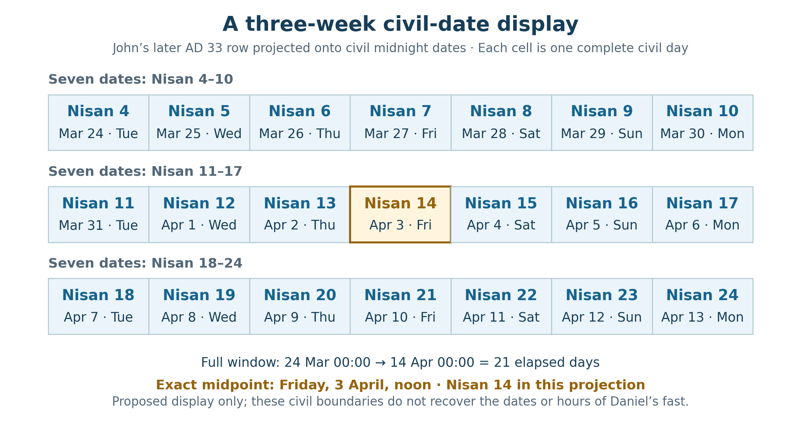
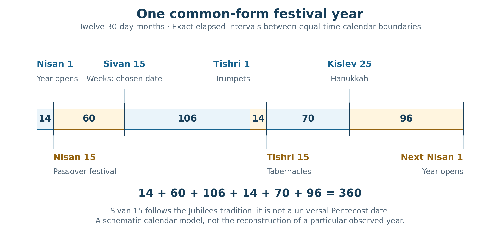
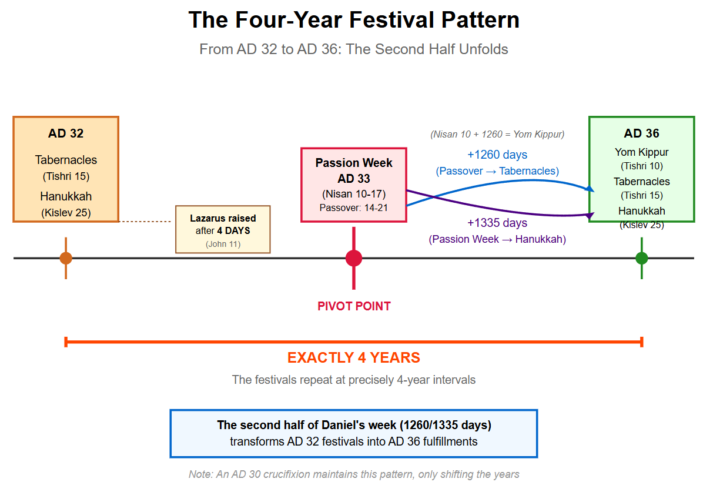
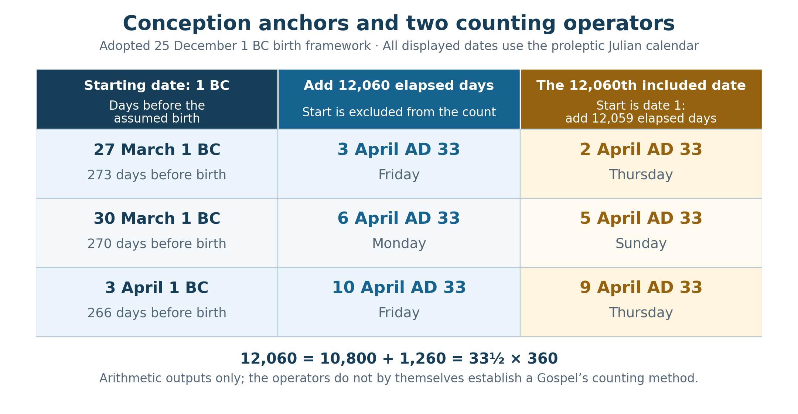

Book 1 · The Cross at the Center of Time · Chapter 12 of 18
Three weeks of waiting and the appointed times gathered in Christ
“In those days I, Daniel, was mourning for three full weeks.”
— Daniel 10:2
Daniel mourns and waits for understanding. He has set himself to understand, humbled himself before God, and given up the comforts of rich food, meat, wine, and anointing oil. The vision that follows is dated to the twenty-fourth day of the first month. A messenger tells him that his words were heard from the first day, even while the answer was resisted for twenty-one days.1
I begin with that assurance. The numbered interval belongs first to a person praying and to an answer already set in motion beyond his sight. Daniel experiences the delay one day at a time. God hears from its beginning. The relation between the whole and its unfolding draws me toward the perspective I have been seeking through John's Gospel.
The previous chapter brought the measuring reed beside the living Temple. Here I widen the view to the festival year and the weeks within it. Daniel gives us weeks, divided weeks, and a blessing upon the one who waits. John gives us Christ moving among the feasts until His appointed hour comes. I want to hear these witnesses together, allowing the calendars to preserve their differences while their purpose is gathered in Him.
The Cross remains the center of that inquiry. Some of the centers below are exact within a stated representation. Others concern the meaning of the events. Both can contribute, provided the figure we draw and the history we read remain intelligible.
In this chapter
- Three weeks and a dated vision
- A center in the Passion display
- The appointed times within the year
- Dedication and Passover in the longer count
- The festival windows projected forward
- Firstfruits across two Sundays
- The sea and the new Exodus
- Conception and the common measure
- Spring and autumn in the representation
- The middle year within the seven
- Sources and notes
Three weeks and a dated vision
Daniel gives three full weeks of mourning, and he dates his vision to the first month's twenty-fourth day. He does not give a numbered starting date for the mourning or an hour at which it ended. The familiar Nisan 4–24 arrangement is therefore a proposed way of displaying the three weeks beside the vision date.2
It contains twenty-one included dates:
24 − 4 + 1 = 21.
Its three nonoverlapping groups of seven are straightforward:
Table 1 — The proposed twenty-one-date display
| Group | Included dates | Number of dates |
|---|---|---|
| First seven | Nisan 4–10 | 7 |
| Middle seven | Nisan 11–17 | 7 |
| Last seven | Nisan 18–24 | 7 |
| Whole display | Nisan 4–24 | 21 |
The central date is Nisan 14. The two adjacent groups on either side of it contain ten dates each. Within the middle group, Nisan 11–13 precede it and Nisan 15–17 follow it.
An elapsed interval asks a different question. From the opening of Nisan 4 to the opening of Nisan 24, only twenty days elapse. To contain all twenty-one complete dates, the window must continue to the opening of Nisan 25. Conversely, twenty-one full days ending at the opening of Nisan 24 would begin at the opening of Nisan 3. The text does not identify which precise hour-boundaries enclosed Daniel's mourning.
I retain the twenty-one-date display because it brings the Passover season within a clear three-week form. The first month contains the selection of the lamb, its sacrifice, Unleavened Bread, and the offering associated with the first harvest. Daniel's waiting can be contemplated beside those appointed times without making the diagram a recovered diary of his fast.
There is also a larger relation within Daniel's own book. The seventy weeks of chapter 9 and the three weeks of chapter 10 place sevens and waiting beside one another. The Repository develops that relation as part of its prophetic span architecture. The chapter's immediate assurance remains the messenger's word: Daniel was heard from the first day.3
A center in the Passion display
In the later lunar reckoning used for John’s Passion presentation, Crucifixion Friday, April 3, AD 33, is Nisan 14—the middle date of the proposed Nisan 4–24 display.
To see the noon relationship precisely, I project the named dates onto their associated civil dates, each represented from midnight to midnight. Nisan 4 corresponds to Tuesday, March 24; Nisan 24 to Monday, April 13. The complete twenty-one-date window runs from March 24 at 00:00 to April 14 at 00:00. Its midpoint is Friday, April 3, at noon:
21 ÷ 2 = 10½ days.

This is a civil-date projection of the proposed Nisan 4–24 window onto John's later lunar row. Its noon midpoint belongs to that declared display. Daniel's actual fasting boundaries are unreported.

I see significance in the place occupied by the Cross within this representation. The date of the sacrifice stands at its center, and the middle of that civil date finds Christ on the Cross as darkness begins. The three weeks give room around the event, while the central seven give it a nearer setting.
The use of civil dates is part of the operation. If the same lunar dates are measured instead from their actual modeled evening openings, the whole window begins six hours before its civil-date projection, and its midpoint is Friday at 06:00. Under the earlier lunar row, Friday is Nisan 15; the identical Nisan 4–24 civil-date display would have its center on Thursday instead. The noon result therefore belongs to the stated later-row projection.4
This is how I want the calendars to speak together. Their differing positions can disclose related forms without being made interchangeable. The earlier reckoning places the traditional Sunday entry on Nisan 10 and the Resurrection Sunday on Nisan 17. The later reckoning places Friday's sacrifice on Nisan 14 and the Resurrection Sunday on Nisan 16. Each contributes a different relation within the same week.
The smaller half-week frame from Chapter 10 also retains its own boundaries: Wednesday evening to Sunday dawn, divided at Friday noon into forty-two plus forty-two model hours. Wednesday evening opens solar Nisan 16 in the evening row. That selected eighty-four-hour frame can stand within the wider civil-date display, with its conditions already declared. It does not establish Daniel's fast as a sequence of precisely timed Gospel events.
Nor do the received events require every seven-day span to have the same midpoint. A Sunday-afternoon-to-following-Sunday-afternoon interval has its midpoint on Thursday before dawn. It cannot place the Friday trial before Pilate there simply by calling the interval a week. The Last Supper also retains its Thursday-evening setting in the adopted Passion reconstruction. I contemplate these events through their actual relationships, allowing a representation to reveal a center where its arithmetic places one.5
The appointed times within the year
The common 360-day reckoning gives the festivals a particularly simple arrangement. Its twelve thirty-day months provide a shared numerical language, while the native calendars retain their own day totals and observances. I use that common form here to trace one complete circuit of the year.
The sequence includes the Feast of Weeks at Sivan 15, the date used in the Jubilees-related calendar comparison. That choice must remain visible: it is not the fixed Sivan 6 date of another tradition or a claim that all ancient groups kept Pentecost together.6
Table 2 — One circuit in the common thirty-day-month form
| From | To | Elapsed schematic days |
|---|---|---|
| Nisan 1 | Nisan 15 | 14 |
| Nisan 15 | Sivan 15 | 60 |
| Sivan 15 | Tishri 1 | 106 |
| Tishri 1 | Tishri 15 | 14 |
| Tishri 15 | Kislev 25 | 70 |
| Kislev 25 | Next Nisan 1 | 96 |
| Complete circuit | 360 |
14 + 60 + 106 + 14 + 70 + 96 = 360.

The intervals join corresponding date boundaries in twelve thirty-day months. Sivan 15 follows the selected Jubilees-related feast scheme. The diagram maps festival dates; it does not replace a historical lunar or solar calendar.

The fourteen from Trumpets to Tabernacles measures the interval between their openings. It is not the full duration of all the seventh-month observances. Likewise, the seventy from Tabernacles to Dedication joins Tishri 15 to Kislev 25; the latter festival has its own later historical origin.
The complete circuit returns to its starting boundary. Its sum checks the placement of the chosen dates within a consistent year. The meaning I seek comes from the appointed times themselves: deliverance, harvest, atonement, dwelling, and dedication. These are the settings through which Scripture teaches Israel to remember and await God’s work.
John moves among them with Christ. Tabernacles gives the setting for His teaching and His invitation to drink. Dedication places Him within the Temple in winter. Passover brings His hour of offering. The calendar's circuit becomes a way to look toward the One who gives the feasts their fulfillment.
Dedication and Passover in the longer count
A longer schematic sequence begins at Tabernacles in AD 29. These year labels locate the proposed representation; they do not establish the feast as a known baptism date. In the common count, three years bring us to Tabernacles in AD 32:
3 × 360 = 1,080.
Seventy more days reach Kislev 25, the opening of Dedication. Another 110 reach Nisan 15 in the following spring. The sequence is retained explicitly in File 69.7
Table 3 — A shared Tabernacles origin
| Schematic boundary | Elapsed from Tishri 15, AD 29 | Final segment |
|---|---|---|
| Tishri 15, AD 32 | 1,080 | 3 × 360 |
| Kislev 25, AD 32 | 1,150 | +70 |
| Nisan 15, AD 33 | 1,260 | +110 |
The 1,150 is half of Daniel's 2,300 evenings and mornings under the equal-half interpretation. The 1,260 is the prophetic half-week in the common year. Their difference gives the interval from Dedication to Passover in this scheme:
1,260 − 1,150 = 110.
John's winter and night notices deepen the meditation. At Dedication, he tells us that it was winter. At the supper, Judas leaves into the night. The notices belong first to their immediate scenes; I also hear a gathering darkness as the Son moves toward the hour in which He will give His life.8
These totals describe two different halfway points. If a 2,300-day span and a 2,520-day span both begin at the same Tabernacles boundary, the first reaches its halfway point at Dedication, after 1,150 days; the second reaches its halfway point at Passover, after 1,260 days. Their centers are therefore 110 schematic days apart. Centering both spans on the same Cross reference would require moving one of their starting points.9
The 1,290 and 1,335 relationships also preserve their operators. An added common month gives 1,260 + 30 = 1,290, when a declared intercalation model permits that addition. Chapter 5's Trumpets-to-Pentecost comparison gives 1,260 + 75 = 1,335, with Nisan 1 counted only in the final seventy-five-date segment. That route begins at Trumpets, fourteen days before the Tabernacles origin of Table 3. Their related totals do not authorize exchanging those origins unnoticed.10
I find the differences fruitful. Dedication, Passover, and Pentecost can occupy related positions within the numerical language while retaining their particular significance. The Lord who stands in the Temple in winter is the One who will be raised, and the Spirit of whom He speaks will be given to those who believe.
The festival windows projected forward
The same common form permits a striking forward comparison. Take the eight included date labels Nisan 10–17 in the proposed AD 33 setting. Add 1,260 elapsed schematic days to each date. The window moves to Tishri 10–17 in the AD 36 setting. Add 1,335 instead, and it moves to Kislev 25–Tebeth 2, the eight-date Dedication window when Kislev contains thirty days.11
Table 4 — Translating the same date window
| Starting window | Addition | Resulting window in the AD 36 scheme |
|---|---|---|
| Nisan 10–17, AD 33 | 1,260 elapsed schematic days | Tishri 10–17 |
| Nisan 10–17, AD 33 | 1,335 elapsed schematic days | Kislev 25–Tebeth 2 |
The first translation begins on the Day of Atonement and reaches into Tabernacles. Only its opening date, Nisan 10, lands exactly on Tishri 10. Nisan 15 lands on Tishri 15. In the second translation, those same eight spring labels correspond to the eight winter feast labels.

In the common 360-day scheme, Nisan 10–17 plus 1,260 gives Tishri 10–17; plus 1,335 gives Kislev 25–Tebeth 2. The image's four-year comparison concerns corresponding AD 32 and AD 36 festival positions. Its “AD 36 fulfillments” and AD 30 alternative are interpretive schematic claims, not independently dated outcomes in Acts.

The diagram places the autumn and winter observances beyond the Passion and shows their proposed relationship to the spring festivals. Table 4 supplies the exact starting and ending dates represented by its broad arrows.
The date labels alone do not identify an event in AD 36. Acts describes Stephen's witness, Saul's conversion, the reception of Gentiles, and the growing life of the Church without assigning those events to the projected feast dates. The Church also receives the Pentecostal outpouring in the immediate Resurrection season; it does not wait until AD 36 to begin.12
I therefore receive the projection as a festival structure within the inquiry. It gives a possible form to contemplate around the spreading witness of Christ. Establishing a particular historical fulfillment would require evidence beyond the fact that a counted interval reaches an appointed date in a schematic calendar.
Firstfruits across two Sundays
Paul names Christ as the firstfruits of those who have fallen asleep. That declaration supplies the center of the harvest comparison. The calendrical traditions can help us contemplate it without first having to prove that every group celebrated its offering at the same moment.13
The interpretations of the sheaf's offering date differed. Josephus places it on Nisan 16, the second day of Unleavened Bread. Rabbinic sources preserve a dispute with the Boethusians over the weekly-Sunday interpretation, commonly discussed alongside Sadducean traditions. Qumran calendrical witnesses give the barley festival on the first month's twenty-sixth day. The names Pharisees, Sadducees, Boethusians, Essenes, and Qumran therefore belong in the inquiry, with care over which source actually supports each association.14
In the later lunar row, Resurrection Sunday is Nisan 16. The fixed-sixteenth interpretation and the weekly-Sunday interpretation then coincide. In the earlier lunar row, that Sunday is Nisan 17; its fixed Nisan 16 is the preceding Saturday. A rule's coincidence with Sunday depends on the month beginning being used.
The regular Wednesday-start solar calendar gives another Sunday one week later, on Nisan 26. Its relation to the two lunar rows can be stated without merging their dates:
Table 5 — The two Sundays by their daylight dates
| Civil date, AD 33 | Later lunar row | Earlier lunar row | Evening solar row |
|---|---|---|---|
| Sunday, April 5 | Nisan 16 | Nisan 17 | Nisan 19 |
| Sunday, April 12 | Nisan 23 | Nisan 24 | Nisan 26 |
These rows give me a sequence rather than a claim of simultaneous universal observance. The first Sunday finds the tomb already opened. On the traditional reading of John's “Eight days later,” the second Sunday brings Thomas before the risen Christ. His answer is worship:
“My Lord and my God!”
— John 20:28
The Gospel does not give an hour for that encounter. Nisan 26 is the second Sunday's daylight date in the evening solar row and the date beginning at dawn in the standard morning reference. The particular phased morning overlay retained in Chapter 10 instead begins Day 27 at that dawn. I use the stated daylight comparison here; Thomas's unreported hour is not made to prove a specific solar boundary.15
I find the two Sundays fitting to the harvest image. New life is disclosed, and a disciple is brought from refusal to confession. Christ's victory precedes the completion of Thomas's understanding. The firstfruits promise concerns the larger harvest that will follow; the Lord's patience with His disciple already shows something of that gathering.
The calendar differences remain part of the witness. I need not make the Pharisee's fixed date, the Sunday rule associated with Sadducean and Boethusian interpretation, and the Qumran date become one historical observance. I can contemplate their relation through the risen Christ who receives His people across those distinctions.
The sea and the new Exodus
The deliverance at the sea supplies a deeper connection between the Passover season and new life. Paul joins cloud, sea, and baptism into Moses in his account of Israel's fathers. The passage through the waters becomes a scriptural way of understanding a people brought out of bondage under God's care.16
Numbers explicitly dates Israel's departure from Egypt to the fifteenth day of the first month. Exodus narrates the pursuit, the night at the sea, the morning watch, and the returning waters. It does not give Nisan 17 as the crossing date. The three-day journey stated after the crossing concerns the wilderness journey toward Marah. It cannot be moved before the crossing to establish an anniversary.17
I can still place the proposed Nisan 17 comparison beside Resurrection Sunday in the earlier lunar row, provided it remains a proposed reconstruction. Its significance is typological: a people passes beyond the power that enslaved them, and life opens where death appeared to bar the way. The biblical account gives that movement its force even where the exact anniversary remains unestablished.
Jubilees offers a further calendrical setting. In its account, Mastema is confined during the fourteenth through eighteenth days and released on the nineteenth so that pursuit can proceed. In the regular Wednesday-start calendar, day nineteen is Sunday. The passage dates the release, however, rather than explicitly assigning the sea crossing itself to that day. The narrative connection between release, pursuit, and destruction is substantial; an exact crossing date or hour requires a further inference.18
Joshua gives a more explicit first-month anniversary. Israel comes up from the Jordan on the tenth day of the first month. In the adopted earlier Passion row, the traditional Sunday entry into Jerusalem also falls on Nisan 10. I can place that proposed Gospel dating beside the expressly dated entry into the land. The two scenes bring a people and their king toward the place of promise.19
The next Sunday, Nisan 24 in that same earlier row, supplies the traditional setting for Thomas's confession. It recalls the twenty-fourth-day vision notice in Daniel 10, while retaining the difference between that date notice and a proven closing hour of his fast. The dates give us points of comparison within the first month; the narratives bring us from expectation through deliverance to recognition.
I see the greater Exodus in Christ's passage through death and His gathering of a people into life. The water at the sea, the harvest's firstfruits, and the opened tomb become related witnesses. Their testimony is richer when Scripture's explicit dates and the further comparisons remain visible together.
Conception and the common measure
The festival framework also reaches backward toward the Incarnation. I continue to use the book's adopted received framework: a birth on December 25, 1 BC, with the covenant sign on January 1, AD 1. These dates have their assigned role in the inquiry; the calculations do not independently establish the historical birthday.20
Count backward from that birth boundary by the two native gestation examples used earlier. A 273-day interval reaches March 27, 1 BC. A 266-day interval reaches April 3, 1 BC. The nine-month designation can also be represented as 270 days in the common reckoning, whose backward boundary is March 30.
That third boundary is a common-form comparison. It does not recover a third independently known conception. The operation replaces the numerical expression of the selected nine months with 9 × 30 = 270, while the native examples retain their seven-day difference.
The larger common measure is:
10,800 + 1,260 = 12,060 = 33½ × 360.
It can also be written:
33 × 360 + 6 × 30 = 12,060.
Thirty-three regular common years and six additional common months have the same numerical total as thirty-three and a half unadjusted common years. That identity does not add six historical months to Christ's life. It compares two expressions of a stated total.21
There is then a second operation: apply 12,060 as an elapsed interval to a Julian starting boundary. As Chapter 8 established, March 27, 1 BC, plus 12,060 elapsed days reaches Crucifixion Friday, April 3, AD 33. A total first expressed through the common calendar can be tested as a literal Julian day interval, provided that application is stated.
Inclusive counting gives a companion endpoint. If the starting date is counted as Date 1, the 12,060th included date comes after 12,059 elapsed date intervals. The three starting boundaries therefore produce the following results:
Table 6 — The three Julian starting boundaries
| Interval back from the adopted birth | Starting date, 1 BC | Add 12,060 elapsed days | Reach the 12,060th included date |
|---|---|---|---|
| 273 days | March 27 | Friday, April 3, AD 33 | Thursday, April 2, AD 33 |
| 270 days | March 30 | Monday, April 6, AD 33 | Sunday, April 5, AD 33 |
| 266 days | April 3 | Friday, April 10, AD 33 | Thursday, April 9, AD 33 |

The elapsed column adds 12,060 days. The included-date column adds 12,059 date intervals because its starting date counts as Date 1. All civil dates are Julian; there is no civil year zero.

The common 270-day path reaches Resurrection Sunday under the included-date operator. The 273-day path reaches Crucifixion Friday under the elapsed operator. The 266-day path stands seven days later than the 273-day path in either column. These are definite relationships within the adopted construction.22
Their Gospel associations require one more distinction. At the April 3 midnight reference, the later lunar row carries Nisan 14; at April 2 midnight, the earlier row carries Nisan 14. They are corresponding date labels on different civil dates. The Thursday-evening supper occurs later, after the evening boundary, when those rows carry Nisan 14 and 15 respectively. A midnight calculation does not by itself time the meal or prove that one Gospel universally counts inclusively and another exclusively.
In the earlier lunar row, the elapsed-count endpoint at April 6 midnight is Nisan 18; the included-count endpoint at April 5 midnight is Nisan 17. Chapter 13 will use Nisan 18 at a separate reference point, Sunday evening, when that date begins. Its use there does not change the Nisan 17 label of Sunday’s opening midnight.23
Spring and autumn in the representation
The additional six common months also give a seasonal relation. A 180-day half-year carries one corresponding month position to its opposite in the common year. Nisan and Tishri stand six months apart. Representing thirty-three regular years with six further months as thirty-three and a half common years therefore gives the comparison a spring–autumn phase change.
I see an affinity between that phase change and the Incarnation's movement toward the Cross. The Son enters the conditions of human life, bears its rejection and grief, and brings life through death. The representation allows me to contemplate His whole coming in relation to the hour toward which He moves. It does not establish that the physical season of His conception changed or that the numerical identity measures a quantity of darkness required for redemption.
The daily and annual images can also be placed beside each other. Under an explicitly chosen day-for-year representation, half a modeled day corresponds to half a common year:
12 of 24 modeled hours ↔ 180 of 360 represented days.
Numbers 14:34 and Ezekiel 4:6 supply particular biblical settings for days representing years. Their extension to the seasonal clock here is the interpretive step. Mark reports darkness from the sixth to the ninth hour, approximately three hours, while Joshua describes the delayed sunset as about a full day. Neither passage supplies twelve historical hours of darkness at the Cross.24
The Baptist gives another relationship across a half-year. Luke places the annunciation to Mary in the sixth month of Elizabeth's pregnancy. Within the adopted spring conception comparison for Christ, an autumn conception comparison for John stands approximately six months earlier. A Day of Atonement conception for John is a further proposal, not a date given by Luke. I can contemplate the herald and the One heralded across the seasons while leaving their unreported birthdays unmeasured.25
From John's eagle height, I seek the purpose gathering those seasons. Winter and night can become images of rejection; the first harvest and the opened tomb can disclose life. The calendrical phase exchange offers a figure through which to consider that movement. The actual authority to give time its order belongs to the Word, whose work I believe may reach backward and forward through creation itself.
The middle year within the seven
The proposed seven-year field from Tabernacles AD 29 to Tabernacles AD 36 contains another useful relation. In the common reckoning it spans 7 × 360 = 2,520 days. Its midpoint stands three and a half represented years from either end, at the corresponding spring position in AD 33.
The beginning of its fourth year is Tabernacles AD 32, three years from the opening and four from the close. These are two divisions of the same larger field:
3 + 1 + 3 = 7.
3½ + 3½ = 7.
The first identifies a middle year between two three-year wings. The second divides that middle year itself into two halves. Tabernacles AD 32 marks its proposed opening; spring AD 33 occupies its middle. The three-plus-four division therefore marks the beginning of the central year, rather than the same instant as the three-and-a-half-plus-three-and-a-half midpoint.26
John's festival notices can be contemplated within that arrangement. His Gospel distinguishes Jesus' teaching when the feast is already halfway through from the living-water invitation on its last and greatest day. Placing that Tabernacles in AD 32 belongs to the adopted ministry reconstruction. The two notices must keep their different positions within the feast.27
The scheme can place the Cross within the middle of its seven-year form without dating the Gentile mission to a particular AD 36 feast. Ending instead at Dedication AD 36 would extend the Tabernacles-to-Tabernacles field by seventy schematic days, making 2,590. The festival attached to the closing boundary matters as much as the year label.
The three-year wings, the halved central year, the three weeks, and the smaller half-week frame are related representations at different scales. I see their affinity as an invitation to contemplate one divine purpose. Their repetition is not a formal mathematical fractal established by an invariant rule, and their historical anchors remain those actually supported by the sources.
Daniel's own hope gives the chapter its final direction. The one who waits is blessed; those sleeping in the dust will awake; Daniel is told that he will rest and rise to his allotted inheritance. John brings me to the opened tomb and to Thomas before the risen Lord. Waiting and its fulfillment belong together.28
I believe the Cross is more than a convenient point from which to arrange these comparisons. The Word who enters His appointed hour may be the source of the order we perceive on either side of it. Our diagrams give finite forms to that possibility. Their most useful work is to help us attend to the One whose death and life gather the feasts, the people, and the times into their fulfillment. The next chapter follows that gathering through the signs of Jonah and Daniel, where different measures of suffering and deliverance approach the same Christ.
Sources and notes
1. Daniel 10:1–4, 12–14. The opening quotation follows BSB verse 2 exactly. Verse 3 describes abstention from rich food, meat, wine, and anointing oil. Verse 13 names twenty-one days of resistance; verse 12 says the words were heard from the first day. The narrative does not place every day of mourning explicitly at the riverbank. Return to text
2. Daniel 10:2–4 gives three full weeks and a vision on the first month's twenty-fourth day. Nisan 4–24 is a proposed inclusive display. Its complete-date window is Nisan 4 opening through Nisan 25 opening; Nisan 4 opening through Nisan 24 opening is twenty elapsed days. No precise fasting start or end hour is supplied. Three equal elapsed weeks ending at Nisan 24 opening would instead have boundaries Nisan 3, 10, 17, 24. Return to text
3. Daniel 9:24–27; Repository File 17, §7.4. The Repository interprets the seventy/forty-nine/twenty-one relationship within its prophetic architecture. That interpretation does not recover Daniel's unreported daily boundaries. Return to text
4. The later lunar row's Nisan 14 daylight is Friday, April 3, AD 33. Nisan 4's associated civil date is March 24; Nisan 24's is April 13. The full civil window ends April 14 at 00:00, twenty-one elapsed days after March 24 at 00:00. Its midpoint is April 3 at 12:00. Sunset-defined dates beginning at 18:00 shift those window boundaries six hours earlier, giving April 3 at 06:00 instead. The earlier lunar row's corresponding civil-date projection centers on April 2 at noon. All these clock settings are representations, not recovered fasting hours. Return to text
5. Chapter 10, Measuring the Passion Week, retains Wednesday 18:00 → Friday noon → Sunday 06:00 as 42 + 42 = 84 schematic hours. The opening is E16, not E15. A seven-day Sunday-afternoon-to-next-Sunday-afternoon span has its halfway point on Thursday before dawn; Friday before dawn is a day later. John 19:14 locates John’s sixth-hour notice before Pilate. Neither John 19:14 nor Exodus 12:3–6 fixes the afternoon selection hour needed to construct an exact seven-day sequence from the lamb’s selection to the following Sunday. Noon means Christ on the Cross at darkness; death follows later in Mark 15:25, 33–37. Return to text
6. Leviticus 23; Jubilees 6:17–22, 15:1, and 16:13, R. H. Charles translation; Chapter 5’s feast-count discussion. Jubilees 6 supplies the third-month Feast of Weeks; Jubilees 15–16 place its firstfruits setting in the middle of that month. Sivan 15 is the selected position in the Jubilees-related scheme. The first-month barley sheaf and the third-month wheat/Weeks festival are distinct observances. The common-year coordinate is (month − 1) × 30 + day − 1; successive subtraction yields Table 2. Return to text
7. Repository File 69, §2.10: Tishri 15 AD 29 → Tishri 15 AD 32 = 1,080 schematic days; +70 to Kislev 25 = 1,150; +110 to Nisan 15 = 1,260. These are schematic coordinates, not Julian date subtractions or independently established ministry notices. Return to text
8. John 10:22–39; John 13:30. The BSB reads “It was winter” in John 10:22 and describes Judas going “out into the night” in 13:30. The winter/night relationship is a literary-theological reading; it does not assign a precise civil date to the Dedication encounter. Return to text
9. Daniel 8:14; File 69, §2.10; File 17, §10. Daniel gives 2,300 evenings and mornings. The equal-half 1,150 + 1,150 is an interpretive decomposition. With the same origin, its midpoint is 110 days before the 1,260 midpoint of a 2,520-day envelope. Translating the whole 2,300 envelope 110 days later could align the centers, but would change its starting and ending anchors. Return to text
10. Daniel 12:7, 11–12; File 12, §7A; File 17, §§12.1–12.4. The added thirty days require a declared intercalation arrangement. In the common Trumpets-to-Pentecost route, Tishri 1 → the spring Nisan 1 boundary is 1,260 elapsed days; seventy-five counted dates beginning at Nisan 1 produce 1,335 included dates overall. Directly, Tishri 1 → that Sivan 15 is 1,334 elapsed / 1,335 included. Chapter 5 also preserves the regular-364 route 1,274 − 14 + 75 and the stated lunar 1,270 + 65 route; their starts and operators remain distinct. Return to text
11. Common calendar only, with every month thirty days and no inserted month in this translation. From Nisan 10 to Tishri 10 is 180; adding three full years gives 1,080 + 180 = 1,260. From Nisan 10 to Kislev 25 is 255; adding 1,080 gives 1,335. Applying either constant to all eight included Nisan 10–17 labels produces the two windows in Table 4. Kislev 25–30 plus Tebeth 1–2 contains eight dates. The image's broad Passover-to-Tabernacles arrow is interpreted by these exact endpoints, not as a claim that every starting date reaches Tishri 10. Return to text
12. Acts 2; 7; 8; 9; 10; 11. The references locate the narratives, not explicit AD 36 feast dates. An AD 30 alternative would require its own earlier/later year labels and calendar phase; the diagram's note alone does not verify a complete alternative history. Return to text
13. 1 Corinthians 15:20–23. The firstfruits identification is Paul's explicit theological statement, distinct from reconstructing the observance of each ancient group. Return to text
14. Josephus, Antiquities 3.10.5, §§250–251, for the first-month sixteenth-day barley offering. Mishnah Menachot 10:3 and Babylonian Menachot 65a, for the Boethusian dispute and Sunday interpretation. Qumran calendrical texts 4Q325 fragment 1 and 4Q326 supply month 1 day 26, with restorations noted in the editions; see the 4Q326 manuscript catalog. These support distinct traditions, not a record of every group's actual AD 33 practice. Return to text
15. John 20:1, 19, 26–29. The BSB says “Eight days later.” The following-Sunday placement uses customary inclusive reckoning. In the adopted daylight comparison April 12 is J23 / S24 / E26; the standard morning reference M26 begins at 06:00, whereas the distinct P overlay begins P27 there. Before Resurrection Sunday's modeled dawn, M is still 18 and P still 19; neither the instant of rising nor Thomas's encounter hour is reported. File 12, §6.3.3, controls the standard Wednesday-morning anchor. Return to text
16. 1 Corinthians 10:1–2. Paul's baptism-into-Moses comparison provides the scriptural link to the sea. The larger Resurrection/new-Exodus application is the theological reading pursued here. Return to text
17. Numbers 33:3–8; Exodus 14; 15:22. Departure is explicitly month 1 day 15. The three days in Numbers 33:8 and Exodus 15:22 follow the crossing. Another ancient reception, Seder Olam Rabbah 5, associates sea deliverance with the final festival day; traditions do not supply uniform independent confirmation of Nisan 17. The chapter does not substitute a traditional date for Scripture's silence. Return to text
18. Jubilees 48:15–17, Charles translation. Verse divisions differ among editions. The fourteenth–eighteenth confinement and nineteenth-day release are explicit; assigning the crossing itself to day nineteen is a further narrative inference. Wednesday Day 1 gives Sundays on Days 5, 12, 19, 26. The familiar weekday label does not settle the dawn/evening phase or the unreported hour of Resurrection. Return to text
19. Joshua 4:19, compared with John 12:1, 12–15. Joshua explicitly supplies the first-month tenth day. The Gospel's Sunday Nisan 10 entry is the book's adopted earlier-row reconstruction; the later row labels the same Sunday Nisan 9. The six-days-before-Passover notice requires its Passover target and counting convention, as Chapter 10 explains. Return to text
20. The received December 25, 1 BC / January 1, AD 1 framework is adopted for this book, not offered as independently proved nativity chronology. All civil dates in Tables 5–6 are Julian. Civil BC/AD counting omits year zero; Julian algorithms may use astronomical year 0 internally for 1 BC without introducing a civil year zero. Return to text
21. Chapters 5 and 8 distinguish common representation from native calendar totals. 33 × 360 = 11,880; six thirty-day months add 180; the sum is 12,060. A historical interval described by thirty-three anniversary years need not equal 11,880 elapsed days. The six-month expression must not be presented as six extra months discovered in the Gospel biography. Return to text
22. Julian midnight JDs: December 25, 1 BC = 1,721,416.5; March 27 = 1,721,143.5; March 30 = 1,721,146.5; April 3 = 1,721,150.5. April 3, AD 33 = 1,733,203.5; April 5 = 1,733,205.5. Add 12,060 for elapsed results or 12,059 for the 12,060th included date. Thus the 270-day path gives JD 1,733,206.5 (April 6) or JD 1,733,205.5 (April 5). All calculations refer to corresponding midnight boundaries, not exact conception, birth, death, or Resurrection hours. Return to text
23. Chapter 10's later lunar J1 begins March 20 at 18:00; earlier S1 begins March 19 at 18:00. April 3 at 00:00 is J14 / S15; April 2 at 00:00 is J13 / S14. Thursday April 2 after 18:00 is J14 / S15. April 6 at 00:00 is S18; April 5 at 00:00 is S17. The different operators do not independently prove a uniform Roman-exclusive versus Jewish-inclusive habit in the Gospel writers. Return to text
24. Numbers 14:34; Ezekiel 4:6; Mark 15:33; Joshua 10:12–14. The seasonal-clock representation is related to Repository File 12, §1; the divine-time proposal is compared with File 19, §8. Third/sixth/ninth daylight hours are not night watches. The phase exchange is also distinct from the Repository's formal coordinate Mirror operation. Return to text
25. Luke 1:24–38. Elizabeth's sixth-month notice supplies an approximate relationship between the pregnancies, not independently stated Tishri/Nisan conception dates or an exact birthday separation. This chapter does not reconstruct the Abijah course's historical service dates. Return to text
26. Schematic coordinates from Tishri 15, AD 29: Tishri 15 AD 32 = 1,080; Nisan 15 AD 33 = 1,260; Tishri 15 AD 33 = 1,440; Tishri 15 AD 36 = 2,520. The middle-year boundaries are 1,080 and 1,440; their midpoint is 1,260. Kislev 25 AD 36 is 2,590, seventy beyond the seven-year end. Actual Julian seven-anniversary-year spans have different day totals. No baptism or Acts event is dated independently by these coordinates. Return to text
27. John 7:14, 37–39. Halfway-through teaching and the last-and-greatest-day living-water invitation are distinct notices. An AD 32 placement is a chronology proposal within the preferred AD 33 Passion framework. File 13 controls the preferred AD 33 and possible AD 30 Passion states. The imagery of a middle year does not change a last feast day into its midpoint. Return to text
28. Daniel 12:2, 12–13; John 20:28–31. Daniel’s waking/arising language supplies a direct scriptural bridge between waiting and life beyond death. The Cross as an actual possible source of temporal order remains the author’s theological proposal. Repository File 00, §8.5 preserves a qualitative cumulative case. Return to text
Scripture quotations are from the Berean Standard Bible (BSB), public domain.